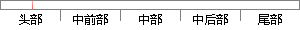

是一种被广泛使用的多站定位体制。
片段位置图

相似结果|
相似片段 1：引言随着电子战日新月异的发展，单站定位成为了测向领域亟待解决的问题。乌兰韦伯测向机具有灵敏度高、测向精度高和抗干扰性强等优点，是使用比较广泛的一种测向机。然而传统的乌兰韦伯测向体制每次只把圆天线阵等效成
相似片段 2：广泛使用的GPS伪距接收设备，通过科学的实验得到GPS输出数据的统计特点和适应范围。此外还研究了多基站定位时，站台几何分布与定位结果的关系。从最简单的二站定位出发，求出影响定位精度的PDOP解析值
相似片段 3：局限性 但是 在短波监测网中 将三角定位与单站定位相结合来确定辐射源的位置 会使定位的结果更加可靠 顺便指出 并不是任何一种测向方法 或称 测向体制 的测向机都既能测定来波方位角又能测定来波仰角
|
※ 片段修改建议 ※
近似词参考：- 广泛：普遍 遍及
- 使用：利用
- 体制：体系体例
系统自动生成语句：是一种被普遍利用的多站定位体系体例。
注：本片段修改建议为系统自动生成，仅供参考。